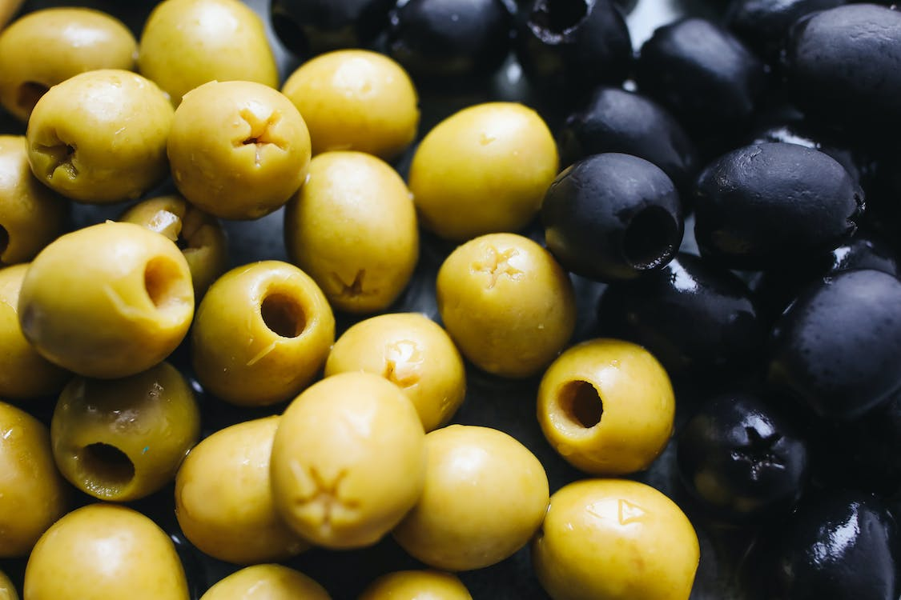
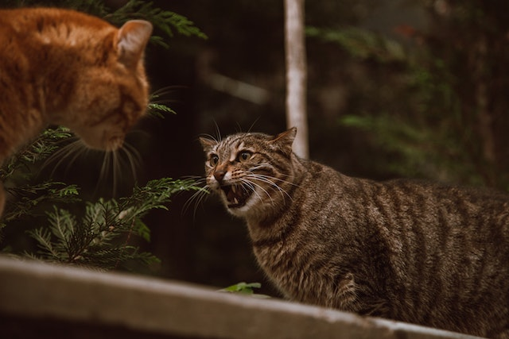

Fatos sobre gatos
Coisas que gatos amam:
- Catnip (erva para gatos)
- Amassar pãozinho
- Cherirar azeitona

Top 3 coisas que gatos odeiam:
- Ir no veterinário
- Fogos de artifício
- Invasores

Clique para ver mais fotos de gatos.



Responda essa pesquisa nos ajude a entender mais sobre esses bichinhos
PS: Se você quiser, pode anexar uma foto do seu gato para fazer parte de nossa galeria.
Quero participar da pesquisa